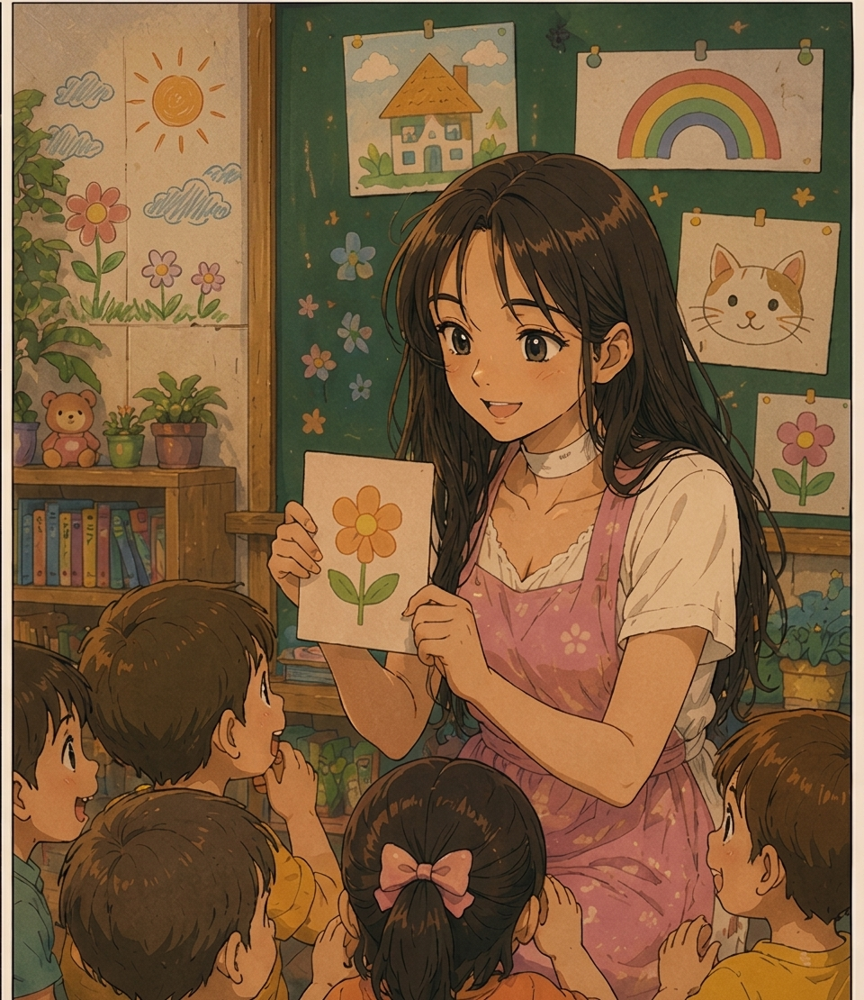

MUNDO DE EUDORA
02 / 07
Um lugar cheio de sorrisos
Algumas pessoas tornam um lugar especial.

02
✦
Quando Eudora entrava na sala, os rostinhos das crianças logo se iluminavam.
Para elas, aquele não era apenas um lugar para aprender. Era um lugar para imaginar, brincar e descobrir o mundo.
Sua jornada
2 de 7